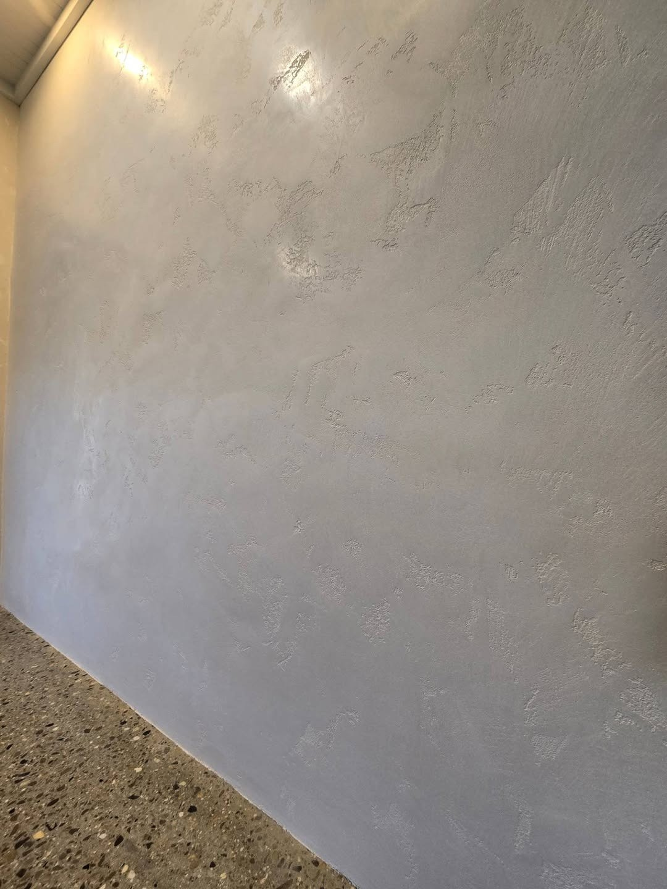
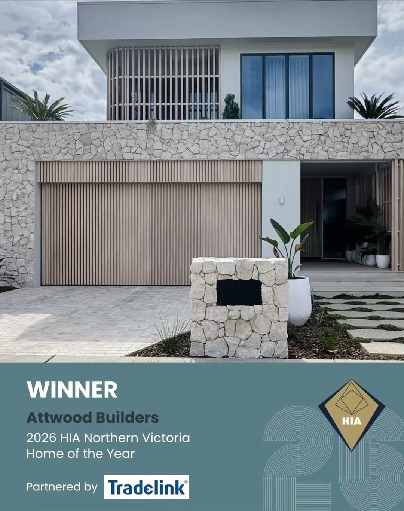
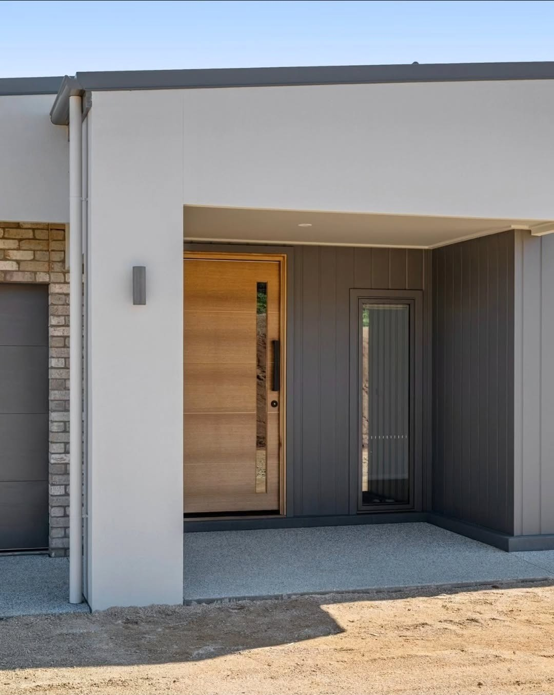
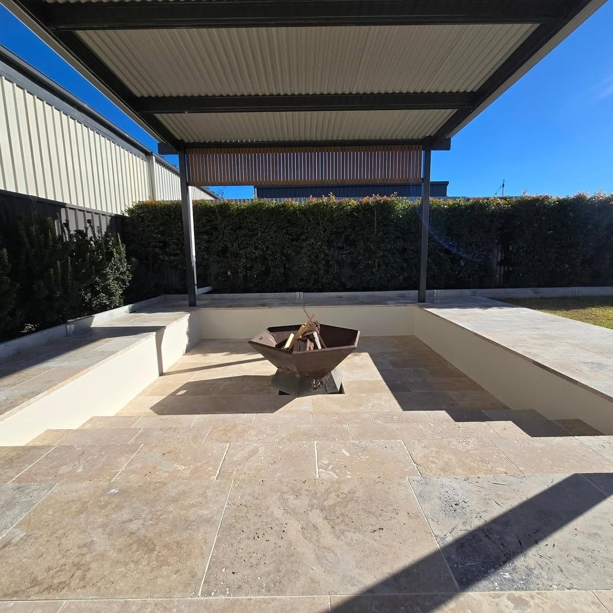
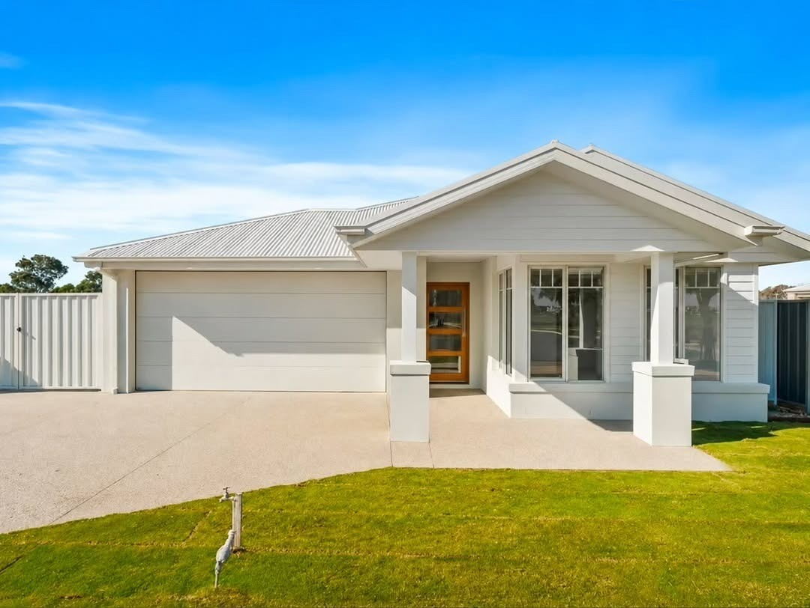
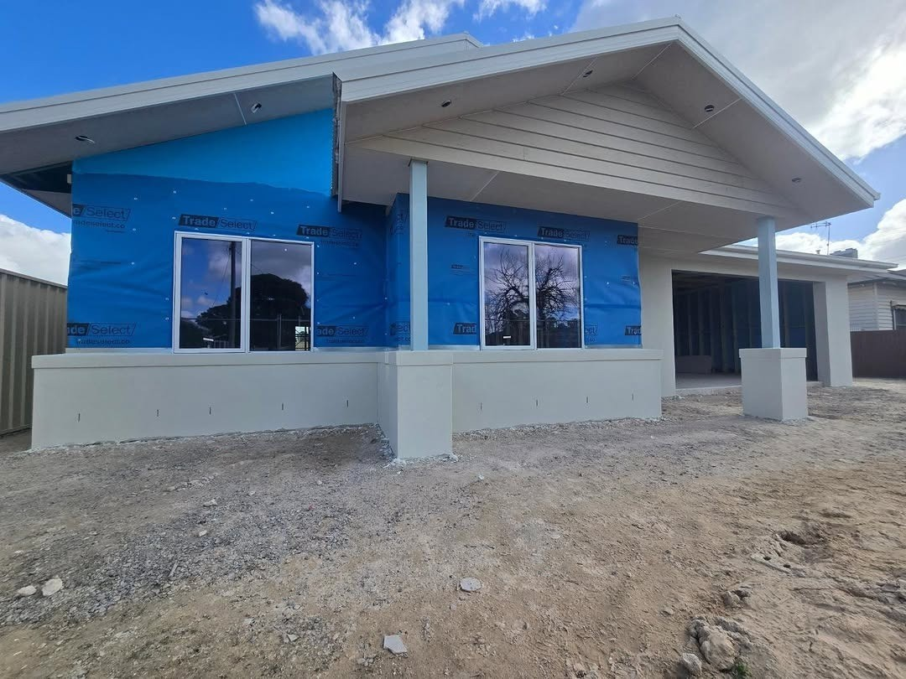

Cement render
Sand and cement over masonry, hard and heavy, with a texture that can be sponged, raked or bagged. It needs to be cured and painted to keep water out — left bare it will take on moisture and hairline cracking over the years.
Work in Yarrawonga tends to come in two kinds for Keller's Rendering & Venetian Plastering: the planned job and the one that has to be sorted this week. Both get looked at before a number is given.
Three different finishes that get lumped together as “rendering”. They behave differently, age differently and cost differently.
Sand and cement over masonry, hard and heavy, with a texture that can be sponged, raked or bagged. It needs to be cured and painted to keep water out — left bare it will take on moisture and hairline cracking over the years.
A polymer-based coat that flexes with the substrate instead of fighting it. Better over blueboard, foam cladding or anywhere movement is expected, and it comes pre-coloured so it does not need painting to look finished.
Polished lime plaster applied in layers and burnished, giving depth and movement that paint cannot copy. It is slow, it is done by hand, and the finish depends on the person applying it — which is why the crew stays small.
The substrate decides which of those is right. Brick and block take cement render happily. Blueboard and foam need a system that moves with them, or the finish cracks along the joints within a season. Timber weatherboards should not be rendered at all without addressing why they are being covered up.
Weather matters too: render cured in the heat without shade or dampening will shrink too fast and crack, and render applied over a wet wall traps moisture behind it. So the schedule is set around the forecast, not around when the scaffolding is free — a slower start is cheaper than a re-do.
Keller's Rendering & Venetian Plastering keeps the crew small on purpose: fewer jobs at once, and the standard does not slip when the schedule gets tight.
Keller's Rendering & Venetian Plastering turns up when agreed, does the rendering and plastering work to the quoted scope, and keeps the site tidy while it happens.
The job is walked with you at the end. Anything that needs attention is dealt with before the invoice, not after.
Edges, clean-up and the small finishes that decide whether a rendering and plastering job looks professional are done before Keller's Rendering & Venetian Plastering leaves site.
Quoted on site — Not over the phone from a photo — the price comes from seeing the job.
One point of contact — The same person answers the phone and runs the work.
Local to Yarrawonga — Travel time is short, which is why small jobs are worth doing.
From the first look to the final clean up.
Workmanship backed — If something is not right, Keller's Rendering & Venetian Plastering comes back.
A clear price for the work and the finish you want, before anything is mixed.
The walls are prepped, rendered and finished properly, and the site is left clean.
Keller's Rendering & Venetian Plastering is a rendering and plastering trade working around Yarrawonga in north-east Victoria — cement and acrylic rendering, Venetian plaster and textured finishes.
The work is in the preparation and the finish: walls set out and floated straight, plaster burnished by hand where it needs to be, and repairs matched back into the existing render.
Photos from our own jobs.






Tell us what you need and roughly the size of the job, and we'll get back to you with a price.
Message us and we’ll get straight back to you.
· ask for Matt
Yarrawonga VIC · Tocumwal, Cobram, Corowa, Benalla & Wangaratta